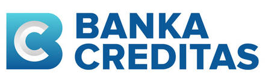

DevOps & CI/CD
Automatizace buildů, testů, releasů a deploymentů tak, aby týmy mohly doručovat rychleji a s menším rizikem.
Senior DevOps Engineer & Java Backend Developer
Pomáhám s CI/CD, cloudovou infrastrukturou, Kubernetes deploymenty a Java/Spring Boot backendy v prostředí, kde záleží na stabilitě, bezpečnosti a doručování bez zbytečného dramatu.
Zkušenosti z projektů pro

O₂ O₂
O₂
Profil
Nejvíc mě baví práce na pomezí vývoje a provozu: automatizace, infrastruktura, integrační vrstvy, aplikační běh a všechna ta praktická místa, kde se rozhoduje, jestli delivery funguje v reálném světě.
Mám zkušenost z enterprise projektů pro bankovnictví, veřejný sektor, telco, engineering i produktové týmy. Umím se pohybovat v regulovaném prostředí, ale zároveň ráda držím věci použitelné, čitelné a udržitelné. Pracuji agilně, typicky ve Scrum týmech, s důrazem na průběžnou komunikaci, transparentní priority a dodávku po malých funkčních krocích.
Co řeším
Automatizace buildů, testů, releasů a deploymentů tak, aby týmy mohly doručovat rychleji a s menším rizikem.
Kontejnerizace, Helm, Kubernetes, prostředí v Azure a praktické provozní nastavení pro aplikace i integrační služby.
Spring Boot služby, REST/SOAP integrace, build tooling, testy a ladění aplikačního chování v enterprise stacku.
Praktické zkušenosti
Analýza běžících Container Apps, revizí, image tagů, startup chyb a health endpointů.
Java 21, Spring Boot, Azure Container Apps, ACR, APIM, Log Analytics, Key Vault
Přínos: rychlejší dohledání root cause a stabilnější aplikační start v cloud prostředí.
Automatizace buildu backendu, tvorby image, publikace do privátního registru a smoke testu po deployi.
Azure DevOps Pipelines, GitLab CI/CD, Docker, ACR, Gradle, YAML
Přínos: opakovatelný release proces od artefaktu po ověření funkčnosti přes health endpoint.
Návrh Helm chartů, úpravy values, troubleshooting HelmRelease a oddělení konfigurací pro prostředí.
Kubernetes, AKS, Azure Stack HCI, Helm, FluxCD, Kustomization, ACR
Přínos: čitelný GitOps model pro bezpečné nasazování do více prostředí.
Mapování veřejných API cest na backend endpointy, testování subscription klíčů a diagnostika HTTP chyb.
Azure API Management, OpenAPI, Spring Boot REST API, curl, Postman, APIM policies
Přínos: jasné rozlišení, jestli problém vzniká v backendu, APIM policy nebo routování.
Vytvoření modulu v Java monorepu, generování API vrstvy, napojení service/DB vrstvy a deployment přes GitOps.
OpenAPI Generator, Java 21, Spring Boot, Gradle, Docker, Helm, FluxCD, APIM
Přínos: rychlejší zavedení nového API do existující enterprise platformy.
Analýza pod logs, Kubernetes events, readiness/liveness probes, env proměnných a Java agent konfigurace.
kubectl, Kubernetes, Helm values, Docker image, Java runtime, APM agent
Přínos: odlišení aplikační chyby od problému v runtime nebo deployment konfiguraci.
Hledání aplikačních logů, práce s KQL, interpretace metrik a návrh provozních dashboardů/reportů.
Grafana, Azure Monitor, Log Analytics, KQL, Prometheus, ContainerAppConsoleLogs
Přínos: lepší viditelnost do incidentů a rychlejší rozhodování při provozních problémech.
Oddělení veřejných read-only endpointů od admin části, validace tokenů a práce se scopes/roles claimy.
Spring Security, OAuth2 Resource Server, JWT, Entra ID, Azure AD B2C, APIM validate-jwt
Přínos: bezpečnější administrační backend s role-based access control.
Kontrola routes, origin groups, custom domén, security policies a omezení admin části na povolené sítě.
Azure Front Door, WAF, Custom domains, Azure CLI, APIM, routing
Přínos: čistší oddělení veřejné a interní části aplikace na infrastrukturní vrstvě.
Ladění connection stringů, DNS/private endpoint problémů, Key Vault konfigurace a startu aplikace proti DB.
PostgreSQL Flexible Server, Spring Data/JPA, Azure networking, Private DNS, Key Vault
Přínos: bezpečnější a praktičtější provoz backendů napojených na databázi.
Návrh spojení aplikačního a knihovního Java repozitáře se zachováním historie a jasným oddělením modulů.
Git, Azure DevOps Repos, GitLab, Java/Spring Boot, Gradle, git subtree
Přínos: jednodušší správa závislostí a jasnější vztah mezi consumer aplikací a knihovnou.
Návrh Azure infrastruktury, práce se secrets, mock endpointy v APIM a validace requestů/response.
Terraform, Bicep, Azure CLI, APIM, JSON, REST API, Bruno, Postman
Přínos: rychlejší integrační testování a opakovatelnější správa cloud prostředí.
Zkušenosti
DevOps a backendová práce v prostředí s důrazem na integrace, stabilitu, bezpečnost a provozní dohledatelnost.
Enterprise delivery, integrační systémy, migrace Temporalu a práce v prostředí, kde jsou proces, kvalita a auditovatelnost součástí technického návrhu.
Technické projekty s důrazem na spolehlivost, provozní disciplínu a spolupráci napříč týmy.
Praktičtější produktové prostředí, rychlejší iterace a širší záběr od infrastruktury po aplikační části.
Stack
Kontakt